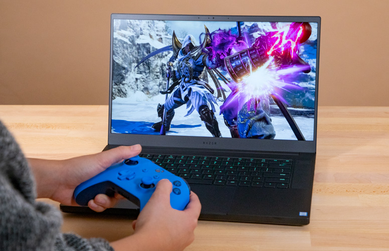

Razer Blade Stealth 15.6" Overview
Razer recently made a power play for the 15-inch gaming laptop market with the Razer Blade 15, which impressed with its svelte design and powerful performance. But due to its pricing, all but the most deep-pocketed gamers couldn't get in on the fun -- until now.
Starting at $1,599 (reviewed at $1,799), the latest iteration of the Blade features the lovely, durable design we've come to expect paired with an Intel Core i7 processor and an Nvidia GTX 1060 Max-Q GPU. It's also one of the first Razer laptops to offer dual storage and Gigabit Ethernet. The new Blade gives a master class in navigating the treacherous road between affordability and power.
Design
The Blade 15 is an '80s throwback in the best possible way. It's teeny, tiny rounded corners gives the laptop a boxy shape that conjures up memories of epaulette-style shoulder pads found on those old-school women's powersuits. Or it might just be I have Huey Lewis and The News' "Hip To Be Square" stuck on repeat in my head. Either way, it's a got a funky, retro style that I'm digging.
Like all Blades, the majority of the Blade 15 is made of its midnight CNC aluminum. The lid (which has some noticeable flex in the middle) has Razer's trademark verdant three-headed serpent casting a seductive glow.
When I opened the lid, my eyes were transfixed on the Chroma keyboard, which, settled in its slight recess, looked like a cluster of stars shining against the all-encompassing darkness of space that is the black aluminum chassis. To fully play up the luminosity of the keyboard, the speakers are mounted on either side of the recess with the power button surreptitiously nestled away in the left speaker.
"The Blade 15 has a funky, retro style that I dig."
Has black become blasé for you? Razer also sells the base model in a truly striking Mercury White frame.
Razer's sticking to its lightweight gaming cred, as the Blade 15 weighs 4.7 pounds and measures 14 x 9.3 x 0.8 inches. It's slightly lighter than the Alienware m15 (4.8 pounds, 14.3 x 10.8 x 0.7~0.8 inches) and the Asus ROG Strix Hero II (5.1 pounds, 14.2 x 10.3 x 1 inches), but heavier than the MSI GS65 Stealth Thin (4.1 pounds, 14.1 x 9.8 x 0.7 inches)
Display
The Blade 15's 15.6-inch matte panel is very vibrant, allowing actress Zoe Renee's cherry-red leotard to pop on the screen during the Jinn trailer. Details were sharp enough that I could see the individual ringlets in the girl's magenta-and-lilac locks.
The 60-Hertz screen had no problem delivering crisp graphics as I played The Witcher 3: Wild Hunt. I shot an orangey-red column of fire at an incoming bandit, causing him to drop to the ground, writhing in agony. I ran him through with my sword and took time to admire the sheen of Geralt's ashen-white locks before moving onto my next foe.
Based on our testing, the Blade 15's screen can reproduce 156 percent of the sRGB color gamut. It easily surpassed the 110-percent mainstream gaming laptop average as well as the Hero II's 120 percent. The m15 and Stealth Thin tied at 150 percent.
But it would have been nice if the Blade 15's panel were brighter. Averaging 257 nits of brightness, it fell short of the 284-nit category average. The Hero II, the m15 and the Stealth Thin also did better at 276, 284 and 293 nits, respectively.
Audio
Don't let those unassuming pair of top-mounted speakers fool you -- the Blade 15 gets pretty loud while remaining relatively accurate. Listening to Pentatonix's "Can't Sleep Love," I could clearly hear every part of the five-person harmony on maximum volume.
The sound managed to cover our entire medium-size test lab, thanks to a sizable boost from the Dolby Atmos software. Out of the six available settings (Movie, Dynamic, Music, Game, Voice and Personalize), I found that Dynamic and Music delivered the most pleasing results.
Hot on the trail of a nuisance witch during Witcher 3, I strode confidently through the forest. The trees whipped wildly due to an upcoming storm, and the sounds of the strong wind filled the lab as a flute played softly in the background.
However, none of the settings could do anything to enhance the bass. There were hints of it when I listened to Elephant Man's "Pon De River Pon Da Bank," but not enough to make a difference.
Keyboard & Touchpad
Razer's Chroma keyboards are always a sight to behold -- I just wish they were a little more comfortable to type on. Despite their 65-gram actuation, the ultralow travel keys consistently bottomed out, due to their short 1.2 millimeters of travel (1.5mm is our accepted minimum). The Chiclet-style keys lacked any significant pop.
I managed 65 words per minute on the 10FastFingers typing test, which is slightly below my usual 70 wpm.
At 5 x 3 inches, the Blade 15's touchpad is absolutely massive. Unlike the discontinued Blade 14, the 15-inch has ditched the discrete mouse buttons in lieu of the large pad. Windows 10 gestures such as pinch-zoom and three-finger swipes worked well. It was even easy to summon the Action Center. The bottom corners of the touchpad were passably clicky for right-and-left mouse buttons.
Armed with an Nvidia GeForce GTX 1060 Max-Q GPU with 6GB of VRAM, the Blade 15 has no problems getting solid frame rates on even the most demanding titles on higher settings.
During my Witcher 3 playthrough, I charged into a band of bandits on horseback, striking one of the villains. His arm flew off at a beautiful 59 frames per second on Ultra at 1920 x 1080. The settings jumped to 65 fps when I dropped the settings to High.
When we ran the Rise of the Tomb Raider benchmark, the Blade 15 hit 37 fps, slinking past the 33-fps mainstream gaming average. With a full 1060 GPU, the Hero II edged out the Blade with 38 fps, while the Stealth Thin and the m15 with their GTX 1070 Max-Q GPUs scored 44 and 49 fps, respectively.
"When striking a villain in The Witcher 3, his arm flew off at a beautiful 59 frames per second on Ultra at 1920 x 1080."
During the Hitman test, the Blade 15 achieved 70 fps, beating the 65-fps average. Once again, the Hero II was just out of grasp with 72 fps. The m15 and the Stealth Thin were in a dead heat at 79 fps.
On the Grand Theft Auto V benchmark, the Blade 15 obtained 49 fps, holding off the 44-fps category average. The Hero II (52 fps), the Stealth Thing (61 fps) and the m15 (66 fps) did notably better.
With a decent score of 6.9 on the SteamVR Performance Test, the Blade 15 is a viable virtual-reality conduit, beating the 6 mainstream average. The Hero II did slightly better at 7.4, while the Stealth Thin and the m15 scored even higher at 9.5 and 10.1, respectively.
When you're not conquering the world, the Blade 15 switches over to its Intel UHD Graphics 630 GPU.
Performance
Despite being marketed as a gaming rig, the Blade 15 can do more than its fair share of productivity work. I ran 30 Google Chrome tabs with a combination of Slack, Twitch streams and Netflix, and the Blade 15's 2.2-GHz Intel Core i7-8750H processor with 16GB of RAM handled it all with aplomb.
The Blade 15 scored 18,771 on the Geekbench 4 overall performance test, edging out the 18,234 mainstream average. Sporting their own i7-8750H CPUs, the Stealth Thin produced 17,184, while the Asus Hero II and the m15 attained 20,690 and 21,450, respectively.
The Blade 15 took 11 minutes and 13 seconds to transcode a 4K video to 1080p, which is just a bit faster than the 11:32 average. The Stealth Thin took 12:01 to finish, while the m15 and Hero II posted times of 9:51 and 9:36, respectively.
This iteration of the Blade is the first one to offer a dual-storage option. The laptop's 256GB NVMe PCIe SSD (with a 2TB 5,400-rpm HDD) duplicated 4.97GB of mixed-media files in 9 seconds for a file-transfer rate of 565 megabytes per second, scorching the 295.3 MBps category average.
The Stealth Thin (512GB M.2 SSD) scraped together a time of 193.3 MBps, while the Hero II (256GB M.2 PCIe NVMe SSD) delivered a respectable 462 MBps. However, the m15's dual 1TB M.2 PCIe NVMe SSDs delivered a smoking 1,017 MBps.
Battery Life
When it comes to battery life, Razer is usually on the bottom rung. But the Blade 15 turned in an impressive time of 6 hours and 9 minutes on our battery test (continuous web surfing over Wi-Fi at 150 nits of brightness), sailing past the 4:30 mainstream gaming laptop average. It outlasted both the MSI Stealth Thin (5:40) and the Asus Hero II (4:56), but couldn't top the Alienware m15 (6:25).
Heat
All that aluminum looks great, but it can get pretty hot. I spent 15 minutes in Witcher 3 hunting down a witch. At the end of the allotted time, I measured the touchpad, the middle of the keyboard and the undercarriage of the Blade 15. The touchpad was a bit warm at 93 degrees Fahrenheit, but the keyboard and the underside hit 107 and 108 degrees, respectively. That's well above our 95-degree comfort threshold.
Once our gaming test was done, we let the system cool down and played a fullscreen HD video for 15 minutes. The touchpad and middle of the keyboard measured 85 and 92 degrees while the underside reached a slightly warm 97 degrees.
Webcam
At first glance, photos taken with the Blade 15's 720p integrated webcam looked pretty good. Outside of a little bit of visual noise, my brown skin looked flawless, but a quick zoom revealed all the fuzziness in the photo.
I also wasn't a fan of how blown out the window looked in the background.
Software & Warranty
The brains behind Razer's Chroma lighting is the updated Synapse 3 software. Not only does the software let you create alluring color-coded keyboard layouts, you can control the system lighting and fan speed as well as create macros and keybinds.
Outside of Synapse, the Blade 15 doesn't really have a lot of bloatware other than what Windows 10 preinstalls, such as Candy Crush Saga, Candy Crush Soda Saga, Dolby Access, Fitbit Coach and Drawboard PDF.
The Razer Blade 15 ships with a one-year limited warranty. See how Razer fared in our annual Tech Support Showdown, Best and Worst Brands, and Best and Worst Gaming reports.
Razer Blade 15 Cost & Configurations
Priced at $1,799, our Blade 15 has a 2.2-GHz Intel Core i7-8750H processor with 16GB of RAM, a 256GB NVMe PCIe SSD with a 2TB 5,400-rpm HDD, an Intel UHD Graphics 630 GPU, Nvidia GeForce GTX 1060 Max-Q GPU with 6GB of VRAM, a 15.6-inch 60Hz display and a black CNC aluminum chassis.
If you need more power, Razer has a $2,399 option that bumps the graphics card up to a Nvidia GeForce GTX 1070 Max-Q GPU with a 1080p, 144Hz panel and 256GB of SSD storage. An additional $300 doubles the storage and expect to kick out another $500 for a 4K, 60Hz screen.
The $1,599 base model gets you a 128GB SSD with a 1TB HDD and a full-HD, 60Hz screen. The limited-edition Mercury White Blade is configured with a 512GB SSD and a 1920 x 1080, 144Hz display.
Bottom Line
Over the years, Razer has made beautifully slim, extremely expensive gaming laptops, leaving cost-conscious gamers out in the cold. Razer successfully remedies the situation with the base model Blade 15. For $1,799, you get one of the lightest 15-inch gaming laptops available, with solid performance, dual storage options, a Gigabit Ethernet and over 6 hours of battery life.
However, you can get the base model of the Alienware m15 for $1,379. It has comparable specs with a better display and longer battery life, though you will take a hit on RAM. If you're craving more power and can spend more, there's the $1,945 Asus ROG Strix Hero II, which offers an Nvidia GTX 1070 Max-Q GPU and a display with a 144Hz refresh rate, but you're going to take a serious hit on battery life.
Overall, the base model Razer Blade 15 is a slim, powerful and relatively affordable option for gamers that have a low tolerance for compromise when it comes to specs.